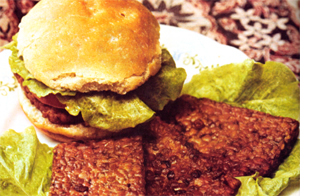
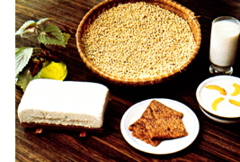
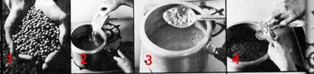
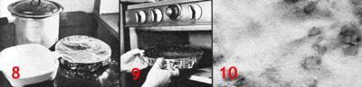
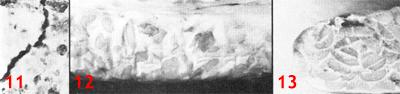
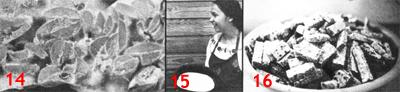

How We Make And Eat Tempeh Down On The Farm
Includes recipes for tempeh burgers, pizza, jambolaya, fried tempeh and tempeh with noodles.
By the Mother Earth News editors
September/October 1977
The Farm (see The Plowboy Papers with Stephen Gaskin in MOTHER NO. 45) is 1,000 happy souls living as a church on 1,700 acres in Tennessee. The Farm is also a completely vegetarian outfit and everyone on The Farm gets a great deal of his or her protein from soybeans served up in one form or another. And one of the most satisfying ways that soybeans are served on The Farm (and in millions of other communities and homes throughout the world, especially Southeast Asia) is in the form of delicious, nourishing tempeh. And here's . . .
Tempeh is a delicious, fermented, highprotein main dish with a unique flavor all its own. It has been a staple food for the people of Southeast Asia for centuries, and it was a hit here on The Farm the very first time we tried it. We've been making and eating tempeh for four years now and we still think it's the greatest food since yogurt.
Fermentation is one of the oldest forms of food processing known to man. A great many of the most primitive peoples at one time or another have independently discovered that some edibles don't immediately begin to spoil as they grow older. . . but, instead, actually get better. We now know that these foods-such as yogurt and tempeh-contain live organisms that are very healthful.
Scientists, for instance, have learned that the fermenting micro-organism of tempeh--a white mold, Rhizopus oligo sporusproduces compounds that act as antibiotics against some diseasecausing organisms. In laboratory tests the tempeh mold was found to inhibit the growth of Staphylococcus aureus (a food poisoning bacterium) and Klebsi ella pneumoniae (one of the bacterium which causes pneumonia), among others. It may even be possible to increase the body's resistance to infection by eating tempeh. If so, that fact would help explain the importance of fermented foods, such as tempeh, in countries with otherwise poor diet and sanitation.
There are other good-and more easily proven-reasons for eating tempeh. This fermented form of the soybean contains more riboflavin, niacin, B6, and pantothenic acid (all vitamins) than unfermented soybeans. The protein in tempeh also becomes partially broken down by enzymes formed during the fermentation process. This makes tempeh a very easily digested food that is especially good for pregnant ladies, old folks, children, and people recovering from illnesses. Tempeh, furthermore (just like the soybeans from which it's made), contains no cholesterol
which, according to prevailing medical opinion, qualifies it as an ideal food for people with heart problems.
And finally: We like this healthful taste treat because it can be served in so many delightful ways that we never get tired of it. The basic soybean tempeh can be fried, deep-fried, mixed into sauces and salads, spread over pizzas, added to soups, vegetarian lasagna, noodle dishes, and stews, and eaten in many other ways. And, if you get tired of all that, you can start experimenting with some of the countless grain and bean combinations that also make great-but entirely distinctive- tempehs. Cracked wheat, barley, rye, oats, and ricefor instance-can all be used alone or half and half with soybeans to create luscious new tempeh flavors and textures.
Besides, tempeh costs a lot less than beefsteak!
IT'S EASY TO MAKE!
For a protein-rich food that can be served in so many different ways, tempeh is surprisingly easy to make. We've grown ours in quantitiesranging from one to 70 pounds and in everything from old Army tents set up in the Tennessee backwoods to a thermostatically controlled cooler-turned-incubator in our modern, sanitary Canning and Freezing/Soy Dairy Building here on The Farm. The whole process is a lot like making yogurt, and we know-once you've had a little practice-that you can handle the job just as easily as we do.
HERE'S ALL YOU NEED . . .
INGREDIENTS: [1] Split and hulled or whole soybeans, [2] tempeh starter, and [3] vinegar. If you can't find them locally, split and hulled soybeans and tempeh starter are both available from Farm Foods, 156 Drakes Lane, Summertown, Tennessee 38438. Most coops and natural or health food stores, however, and some supermarkets handle whole, dry soybeans. In rural areas, the beans frequently may be purchased at very low cost from farmers' co-ops, feed stores, and grain elevators. If you buy from the last sources, though, make absolutely certain that you do not get mercury-coated seed beans (which are required by law to be labeled and dyed).
UTENSILS: You'll need a one-gallon cooking pot, a colander, a closed-mesh potato masher (or hand-cranked grain mill, if you're making tempeh from whole soybeans), a metal mixing spoon, a small jar, a thermometer, a tempeh container, a slotted spoon, and an incubator.
The ideal tempeh container allows enough air to get in for the tempeh to grow, but not enough to dry the beans out. It should also hold and maintain the humidity of the fermenting mass, without drowning the Rhizopus oligo sporus mold. Look for [1] a pot or pie plate with a loose-fitting cover, [2] a dinner plate with a pot lid or inverted pie plate over it, [3] a colander with a lid, [4] a covered 9" X 9" casserole dish, or [5] a cake pan, pie plate, flat-bottomed bowl, or pot over which you can stretch a piece of wax paper, plastic wrap, or aluminum foil. The cover should be taped down to hold it in place a quarter of an inch or more above the surface of the beans and it should have holes punched in it every inch both ways across the top with a nail or other small pointed object.
Just the word "incubator" sounds a little complicated (perhaps because we don't ordinarily use it that much), but you shouldn't allow it to intimidate you. All you're after in this instance is somethinganything-that will keep your tempeh container's temperature at a steady, stable 90°F while the culture inside does its thing. You can try [1] a picnic cooler with a smallornamental size-light bulb wired inside, [2] a closet with a drop light-check its temperature occasionally-[3] a shelf above or beside your hot water heater-the temperature may vary with the amount of water being used, so check the temperature when the heater is on pilot and again when the flame is full on-[4] an oven with a pilotcheck the temperature first-or [5] any placea sunny window, an attic, up over a wood stove -where heat collects.
Bear in mind, as you assemble your ingredients and utensils, that tempeh doesn't grow well when the humidity is higher than 85%. It is best, then, not to try even the following "never fail" recipe for the first time on an extremely humid day.
PREPARE YOUR STARTER
Good tempeh starts with a good starter . . . and, naturally, we think our starter (available from Farm Foods, address above) is a good one. We ship it as small packets of dried spores, but you'll use it as a liquid. So your first step in whipping up a batch of tempeh will be to thoroughly rinse out a packet of dried starter with three teaspoons of clean, cool water. Pour the liquid (and all the spores, of course) into a small jar, cap tightly, and shake well. The starter, if not used immediately, can then be stored for up to three weeks in the refrigerator or even frozen for several months in a freezer.
HOMEMADE TEMPEH: PREPARATION
To make about two pounds of tempeh (12 pieces measuring 4" X 3" X 1/2"), start with 2-1/2 cups (one pound) of washed and drained whole or split and hulled soybeans, one tablespoon of vinegar, and one teaspoon of tempeh starter liquid.
WHOLE SOYBEAN PREPARATION, OVERNIGHT SOAK METHOD:If you're using whole soybeans, you can begin the batch of tempeh by soaking them overnight in a pot with two quarts of water. Run the drained beans through a hand-cranked milladjusted to a loose setting-the next morning to split them in half, or chop them into large bits with a blender or the chopping blade on a food grinder.
If you do not have a mill, blender, or grinder, you can crush the soaked soybeans with a potato masher. To make the job easier, though, you should first boil the beans for 10 minutes to loosen their hulls, then drain and cool them with cold water before crushing the soybeans in the potato masher.
Dump the milled, blended, ground, or crushed beans back into the pot, add 12 cups of water, bring to a boil, and cook the mixture at a bubbling boil for 25 minutes. Just before the boil starts, the hulls will float to the top. Skim them all away with your slotted spoon.
WHOLE SOYBEAN PREPARATION, SHORTENED SOAK METHOD: If necessary, you can shorten the overnight soak of your whole soybeans drastically by putting the raw beans into a pot with two quarts of water, bringing them to a boil, boiling them for 10 minutes, then turning off the heat and allowing them to stand for one hour . . . after which, the beans are drained and cooled.
The cooled beans may then be milled, blended, ground, or crushed with a potato masher without any further processing. Then, just as with the OVERNIGHT SOAK METHOD, the crushed soybeans are dumped back into the pot with 12 cups of water, brought to a boil, and cooked at a bubbling boil for 25 minutes. Use your slotted spoon to skim away all the loose hulls as they float to the top.
SPLIT AND HULLED SOYBEAN PREPARATION: If you start with split and hulled beans (instead of whole ones), the basic preparation is even easier. Just combine the hulled soybeans in a cooking pot with two quarts of water, bring to a boil, and cook at a bubbling boil for 45 minutes. That's it.
Pour the cooked beans (from any of the three methods described above) into a colander that has been set over a pot to catch the cooking water (which can be used as stock). Then move the colander to a sink or shallow pan, cover, and let it drain and cool for 20 minutes. Transfer all of the drained stock to clean jars and put them in the refrigerator until you're ready to use the nutrient-rich water in soups or gravies.
The drained and cooled beans are then dumped into an empty, clean cooking pot. Add one tablespoon of vinegar and mix it in well, then check the temperature down in the center of the beans (where they'll be the warmest). The cooked soybeans should be cooled to below body temperature (98.6°F) before the starter is added (otherwise, it might be harmed). If necessary, stir the beans to bring their temperature down to an acceptable level. Then shake the starter liquid well, add one teaspoon of the fluid to the cooled beans, and mix thoroughly (this will take about a minute). Put the remaining starter back into the refrigerator immediately.
Spread the treated beans out in one or more of the tempeh containers in a smooth, lightly packed layer not more than one-half inch deep. You're now ready to place the container or containers in the incubator so that the tempeh culture can grow.
SPECIAL NOTE: If you've ever made soymilk, you know that the mash left over from the process is called okara. What you probably didn't know, however, is that tempeh can be made from this okara (instead of from a fresh batch of soybeans).
Press the okara (it should be coarse in texture and will already have been cooked 10 minutes in the milk-making process) in a loosely woven cloth until it's light and dry enough to squeeze in your hand without getting wet. Then add one teaspoon of vinegar to the cooled and drained okara. Mix well and stir the okara if necessary to cool it be
low body temperature. Then add the tempeh starter as described above, and spread the treated okara out in a smooth, lightly packed layer not more than onequarter inch deep in one or more of the tempeh containers. (Note the difference between the layer's thickness for okara and for whole or split soybeans.) From here on out, the process is the same.
HOMEMADE TEMPEH: THE CULTURE DOES ITS THING
Place the loaded tempeh containers in the incubator. The very best temperature for the culture of tempeh is 88°F and in no case should you allow your plates of growing culture to become cooler than 85° or warmer than 95°. Temperatures much outside this range can inhibit the tempeh mold and promote the growth of unwanted bacteria that can spoil the whole batch of soybeans.
The maintenance of the proper temperature is especially important during the first 12 hours of your tempeh's growth, when the mold is getting started and is still vulnerable. Check the inside of your incubator from time to time with a thermometer to make sure that your developing tempeh isn't too hot or too cold. And remember that the culture needs oxygen! Your incubator should not be airtight.
After 12 to 15 hours, you'll notice condensation beginning to form on the inside of the tempeh container(s). Soon, the beneficial white mold that you've been cultivating will begin to show faintly on top of the layer of beans. It will gradually thicken over the next three to four hours.
By the time your batch of tempeh has "worked" for 19 to 22 hours, the mold on its top should have lengthened and thickened most luxuriously . . . and, after 24 to 30 hours of incubation, the Rhizopus oligosporus will look like white icing on a cake.
These last few hours are what give tempeh most of its flavor, so don't try to shortcut the incubation period. And don't be alarmed if a few gray or black spots appear on the white mold. They are in no way harmful, as long as you cook the finished tempeh well.
Remember, too, that if the temperature of your culture drops below 85° at any time during incubation, the mold's growth will be slowed and the tempeh won't go through the just-listed changes on schedule. This doesn't necessarily mean that you should give up and throw it away. As long as the beans smell good, the batch of tempeh is probably all right. (It doesn't always spoil when mishandled in this way, especially if it was kept warm enough during its first 12 hours. If the beans smell bad, however, after 30 hours of incubation . . . discard them without a second thought.)
ADDITIONAL TEMPEH-CHECKING TIPS
After you've run through a batch or two of tempeh, you'll learn to judge a culture as soon as you see it. In the meantime, here are some additional tips to get you started.
GOOD TEMPEH: The beans in a good batch of tempeh are completely hidden under a white fluffy layer and are bound together into a solid cake. This cake will feel firm-not mushy or very spongywhen pinched between the thumb and forefinger. The surface of only the beans in direct contact with the container will show on the bottom of the slab of tempeh . . . and the spaces between all the beans in the cakefrom each surface right through the center of the chunk of tempeh-should be solidly filled with white mold.
Fresh tempeh smells good . . . something like fresh mushrooms or bread dough. It's dry-moist to the touch (though there may be some drips of water on it from the cover of the tempeh container), and thinly sliced pieces of good tempeh hold together without crumbling. There may be some patches of gray or black on even very good tempeh . . . and it can sometimes become black all over if it's allowed to incubate too long. This, however, is not harmful unless the culture has a strong ammonia smell.
IMMATURE TEMPEH: Tempeh that has not incubated long enough may look done on top and underneath, while still lacking strong mold growth in its center. The beans in such a cake are bound together only loosely, the cake feels very spongy and tends to fall apar when pinched, and the slab of tempe will crumble when sliced. Immature tempeh doesn't have much flavor when cooked and the beans in side-even when cooked for a whiletend to have a bit of a crunchy "edge" t them.
Solution: Let the batch of tempe incubate longer. If the heat is distributed unevenly in side your incubator, it's possible for half a pan of tempeh to get done before th other half of the very same batch! problem. Just cut off the done half and let the rest "work" as much longer as necessary. Likewise, if the top of a slab of tempeh finishes before the bottom of the same batch . . just flip the slab over and let it incubate some more.
INEDIBLE TEMPEH: Tempeh can become inedible for any one of several easily corrected reasons: [1] the culture was mixed up in dirty containers or with dirty utensils, [2] the cooked beans were not drained well enough, [3] the starter was added while the cooked beans were still too hot, [4] the tempeh was not kept warm enough while it incubated, [5] the tempeh was kept too hot while it "worked", or [6] the tempeh was cultured in a container that was sealed so tightly that air couldn't get in.
In its most obvious form, inedible tempeh will have only a very thin mold on its surface, or no mold at all. The beans will smell unpleasant and be slimy, sticky, and warm to the touch. In a less extreme form, the mold on bad tempeh will be soggy looking and quite obviously thinner than the Rhizopus oligosporus culture which grows so luxuriously on top-quality tempeh. Again, the cake will not smell fresh and inviting and the slab of tempeh, when pinched, will feel mushy and a little sticky or slimy.
There can even be bad patches of culture on otherwise-good tempeh. When found on the bottom of a slab, these bad spots can mean that the beans weren't drained well enough. Harmful bacteria then began to grow in the excess water that collected on the bottom of the tempeh container.
Remember that you should always check all three layers-top, middle, and bottom-of a batch of tempeh for the dense, vigorous, pleasant-smelling growth you want. It's possible for a slab of tempeh that looks good on the top to be bad in the middle or on the bottom.
An easy rule to remember: Always throw out any tempeh that contains any growth that is any color other than white, gray, or black.
QUESTIONS AND ANSWERS
Q: The white mold on my tempeh grew abundantly in patches but not at all in other places. What happened?
A: The starter liquid wasn't mixed into the beans thoroughly enough. This if caused the germinating spores to grow in clumps, rather than throughout the batch of soybeans.
Q: The tempeh smells good, is firm in texture, and is well done in the middle and on the bottom layers. The mold didn't grow very long or very thick on the top, however, and the beans up there look dried out. What happened? Is it OK to eat this batch?
A: The cover on your tempeh container is too loose and air moving over the surface of the beans dried them out too much for the tempeh to grow on top. Not all good tempeh is pictureperfect. Brush the dried beans from the top and cook up the rest of the cake.
Q: My tempeh is still crumbly (which leads me to believe that it's not done yet) . . . but it's turning gray too. Isn't that supposed to mean that it's done?
A: The mold can turn gray -sporulate -if [1] the beans start drying out, [2] the temperature of the incubator drops too low, or [3] the mold is exposed to too much air. These are all adverse conditions that threaten the mold's existence, and sporulation--which protects the spores in a hard case until they can resume growth later under more favorable conditions-is a defense reaction.
You might be able to save this batch by [1] sprinkling on a little water, [2] keeping your incubator warmer, or [3] covering your tempeh container better. If the tempeh is too far gone, however, you should just chuck it and try again.
Q: Can I start another batch of tempeh from this one, the way I do yogurt?
A: Yes, if you're careful. Let some of your tempeh incubate long enough to turn black, then put a piece of it in a small jar of water and shake well. Take out the chunk of tempeh (you can cook it and eat it, if you like) and inspect the fluid left in the jar. If the suspension is as dark as your original starter, you can use it "as is". If it's too light, you can let the suspension settle overnight in the refrigerator, pour off the clear liquid on top, and use the denser solution on the bottom.
Carefully check the finished tempeh made from any "saved" starter. After a few batches, your "homegrown" starter can weaken (just as saved yogurt starter is often weaker than fresh starter) and other critters can begin to grow in your tempeh. We like to grow our tempeh with fresh starter.
YES! TEMPEH CAN BE PRESERVED!
Tempeh tastes best when it's cooked up fresh right out of the incubator. Small batches of uncooked tempeh, however, can be refrigerated quite nicely for a couple of days (remember, though, that the mold is still alive and producing heat and, for that reason, tempeh can't be kept indefinitely in the fridge).
Tempeh can also be stored for weeks or months in a freezer if it's sliced, blanched, and quick-frozen. And thinly sliced tempeh will keep indefinitely if it's sun- or ovendried.
RECIPES
TEMPEH BURGER
Cut a bun-sized square of tempeh about one-half inch thick. Place it in an oiled skillet and fry one side until it's brown. Add onehalf tablespoon of water (be careful when mixing water with oil . . . it splatters!) to the patty, cover the skillet with a lid, and steam the square of tempeh until the water evaporates. Repeat with another half tablespoon of water. Then turn the patty, fry until brown, and steam twice again. (This whole procedure will take about 15 minutes in all). Serve on a sesame seed bun with onion, mustard, ketchup, and lettuce or sauerkraut. Tempeh burger is also great with tartar sauce.
DEEP-FRIED TEMPEH
Cut tempeh into four-inch squares or triangles. Heat cooking oil in a wok, skillet, or deep fryer. Deep-fry tempeh chunks in the oil until they're golden brown and serve them in applesauce or with your favorite dip.
TEMPEH PIZZA
Pan-fry (as for tempeh burger) or deepfry thin strips or small rounds of tempeh . . . then spread them over a pizza pie and bake in the oven.
CUBED FRIED TEMPEH
Pan-fry or deep-fry cubes of tempeh and then add them to soups, vegetarian lasagna, vegetable stews, noodle dishes, sauces, or salads.
TEMPEH AND NOODLES
Cut three cups of tempeh into 1/2" cubes. Saute the cubes in oil in a skillet-stirring occasionally-until they're golden brown on all sides . . . then add onethird cup of water to the skillet, cover, and steam the tempeh cubes on a low flame until all the water is gone. Set the tempeh aside.
Chop one bell pepper and one medium onion into small pieces and saute the pieces in oil until the onion bits are transparent. Add a dash of garlic powder and one-half teaspoon of oregano. Combine the sauteed vegetables with the tempeh.
Now boil enough noodles to make three cups, heat a small amount of oil in a skillet, and fry the noodles until they're slightly brown. Add the tempeh and vegetables to the noodles and stir. Season with soy sauce to taste.
CAJUN TEMPEH JAMBOLAYA
(Louisiana Farm Favorite)
First-and while doing nothing else -chop two large onions into fine cubes. (Don't try to chop the onions while making the roux that is called for next. It takes practice and undivided attention to make a perfect roux.)
Once the onions are chopped, you can begin to make a roux from four tablespoons of soy oil and four tablespoons of flour. Heat the oil until it's quite hot, lower the heat to a simmer, add the flour, and stir constantly until the roux is nearly coffeecolored. This cooking and stirring should be done in a double-boiler or over very low heat. Be careful not to let your roux burn.
When the roux is nearly coffee-colored, add the cubes of onion. Simmer one minute and then add one-half to three-quarters cup of water, one tablespoon at a time. (This is called "smothering" the onions.) Then add two bay leaves, one teaspoon of salt, onequarter teaspoon of garlic powder, a pinch of black pepper, and two drops of Louisiana Hot Sauce.
Next make a weak brine by dissolving 11/2 teaspoons of salt in 1 cup of water and dipping a pound (or six 4" X 3" X 5/8" pieces) of tempeh into the solution for a couple of minutes. Cut the soaked tempeh into chunks, saute them until they're golden on all sides, and add them to the simmering stew. You should also add one package of frozen peas, two chopped, sauteed carrots (optional), or one chopped, sauteed green pepper (optional). Stir in enough water to make a nice gravy and serve over rice.
Copyright, 1977 The Farm, Sum mertown Tennessee, U.S.A. All rights reserved. Publication in THE Mother Earth News(restricted) by permission.
|
 1. Soon-to-be- tempeh soybeans 2. Step one: soak soybeans. 3. Cook 25 minutes and skin off the hulls. 4. Add vinegar to drained beans. |
 6.. cool them and add ""starter"" ... 7. spread the inoculated beans 1/2"" deep container.. 8. cover with foil make air holes... |
 8. get ready to heat containers together... 9. put 'em in an 88 incubator. 10. and after day the bean cake becomes white with mold. |
|
 11. The finished tempeh cake. 12. Good tempeh, edge on. Note how mold fills spaces between beans. 13.Another example of wll-ripened tempeh. |
14. Gaps between beans indicate immature tempeh. 15. A cook and her tempeh. 16. sliced fresh tempeh can be frozen, dried or cooked. |
 |
|
 |
 |
|